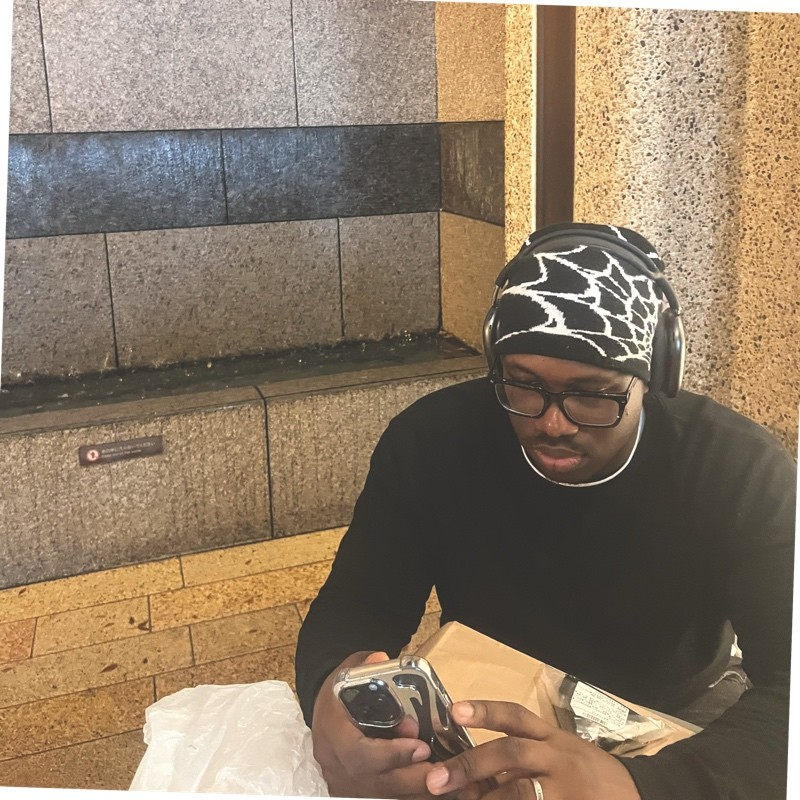
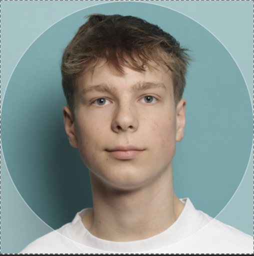

Edmilson
Voor de quizzie opdracht heb ik me gefocused op de notulist zijn van de groep en heb er voor gezord dat de informatie op een logische volgorde is verdeeld en duidelijk te lezen is voor de opdrachtgever. Samen werking was prima en iedereen heeft zijn rol kunnen doen.

Jente
Bij deze opdracht heb ik me sterk gefocust op het projectplan en de designs voor de quiz. Ik heb goed kunnen samenwerken met het team en vond de opdracht erg leerzaam.

George
Ik heb geholpen met het maken van de designs voor de quiz en gezorgd voor een mooie en duidelijke uitstraling. Samen met mijn team heb ik ervoor gezorgd dat de quiz er goed uitziet en makkelijk te gebruiken is.